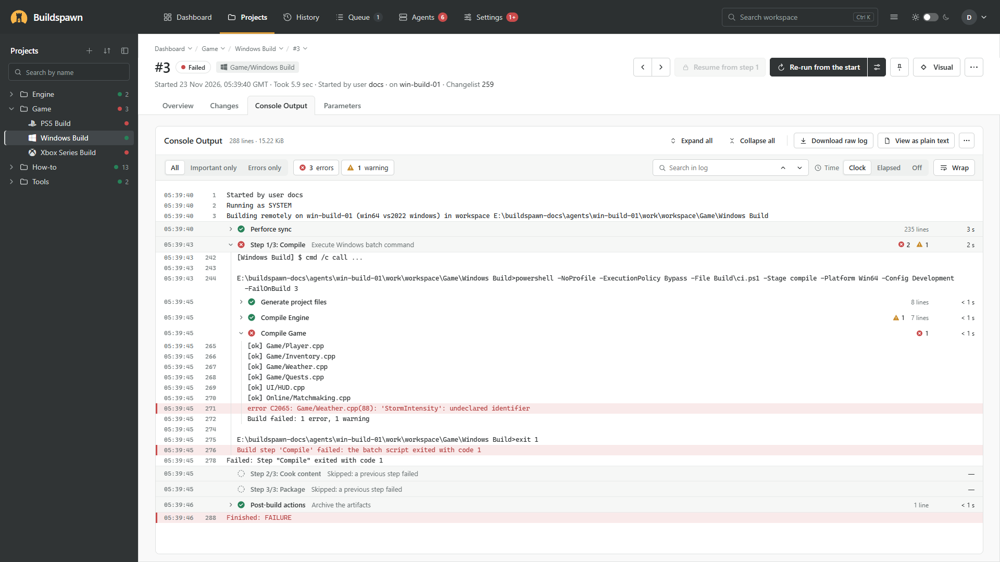
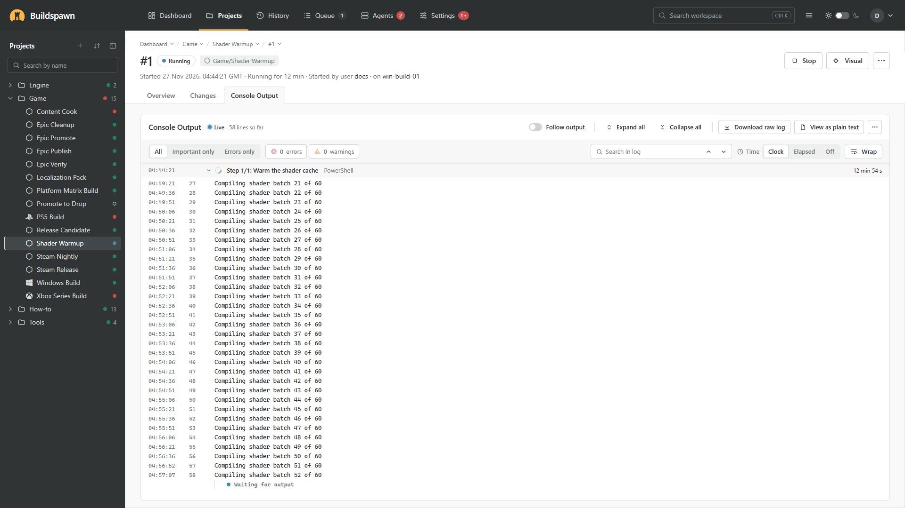

The build console
The Console Output tab shows the whole log of a build. It splits the log into blocks, puts a time on every line, and helps you find errors fast.

Open the console
- Open a build. See The build page.
- Click the Console Output tab, or click Log beside a step on the Overview tab to jump to that step.
Blocks
The log is a tree of blocks. Each build step is a block, and blocks can hold smaller blocks.
- Version control work has blocks of its own, for example the Perforce workspace, the sync and the list of changes since the last build.
- Each block header shows its status (a tick, a cross or a spinner), the step's runner, its warning and error counts, and how long it took.
- Blocks that failed open by themselves. Blocks that passed start closed, so you see the problem first.
- Click a header to open or close a block. Expand all and Collapse all in the card header do it for every block.
Very long logs load quickly: the console shows the start and end of each block and loads the rest when you open it.
The rows of the console
| Row | What it is |
|---|---|
| Step N/M: name | A step. The header shows its status, the runner (for example Execute Windows batch command or PowerShell), its error and warning counts, its lines and its duration. A step that has not started shows a spinner. A step that did not run shows Skipped: a previous step failed or Skipped. |
| Done in #N | In a resumed build, a step that was not run again. It says Done in #1 and has an Open in #1 log link to the output in the original build. |
| Perforce sync, workspace and changes | Blocks for the source control work, before the first step. |
| Your own groups | Blocks your script makes with ::group::. They can be nested, and can show details after the name, such as 1,204 files. |
| Post-build actions | A block for the actions after the steps, such as archiving artifacts. |
| Lanes | For a Matrix block, a lane for each combination. A chip shows the lane. Click it to show only that combination. A side build of a Parallel block has its own block, named Side build. |
| First and last lines | The first lines say who started the build, as which user and on which agent and workspace. The last line is Finished: SUCCESS, FAILURE, UNSTABLE or ABORTED. |
Errors and warnings
A line the tool marks as an error has a red band and a count in its block header. The error and warning counters at the top add them all up, also for blocks that are closed or not loaded yet. Click a counter to jump to the first line, press E for the next error and W for the next warning. Your scripts can mark lines with ::error:: and ::warning::. A step that fails also writes a line such as Build step 'Compile' failed: the batch script exited with code 1, and a last line Failed: Step "Compile" exited with code 1. The build page's Decided by row repeats it.
Times
Buildspawn records a time for every line of every build. You don't need to switch anything on in the build configuration.
Use the Time switch in the toolbar:
| Choice | What you see |
|---|---|
| Clock | The time of day each line was written, for example 05:36:29. |
| Elapsed | The time since the build started. Good for spotting slow parts. |
| Off | No times, so the log has more room. |
Your choice is saved with your account and used for every build.
An administrator can switch time recording off for the whole server under Settings › System › Build console. Builds from before Buildspawn 1.1 have no times.
Filters
The buttons on the left of the toolbar choose which lines you see:
- All: every line.
- Important only: block headers, warnings and errors.
- Errors only: only the lines that report errors.
The errors and warnings counters count the whole log, also the parts that are closed or not loaded yet. Press E to jump to the next error, or W to jump to the next warning. Warning lines have a yellow band and error lines a red band.
Search
- Click Search in log and type a word, for example
C4996. - The box shows the matches as "N of M".
- Use the up and down arrows beside the box to move between matches.
Search looks at the whole log, not only the lines on the screen.
Line links
Every line has a number. Click a line number to put a link to that line in the address bar, or use Copy line link to copy it. Send the link to a colleague and their browser opens the console at that line.
Running builds and Follow

While a build runs, the console shows Live and the number of lines so far.
- Switch Follow output on to keep the newest line in view.
- When you scroll up to read, following stops. A Jump to bottom chip appears; click it to follow again.
- The open block shows a spinner and its time so far. Waiting for output means the step is still running but has not written anything new.
Other tools
- Wrap wraps long lines instead of scrolling sideways.
- Download raw log saves the full log as a text file.
- View as plain text opens the log as plain text in the browser, with no blocks or colours.
Write your own blocks with ::group::
Your build scripts can make their own blocks and mark their own warnings and errors. Print these lines from any script, in any language. Each one must start at the beginning of the line (spaces before it are allowed).
| Line | What it does |
|---|---|
::group::Name | Starts a block called Name. Blocks can be nested. |
::group::Name::Details | Starts a block and shows Details after the name in the header, for example ::group::Compile::1,824 actions. |
::endgroup:: | Ends the innermost open block. |
::endgroup::STATUS | Ends the block and says how it ended: SUCCESS, UNSTABLE, FAILURE, ABORTED or SKIPPED. |
::warning::Text | Writes Text as a warning line. It counts in the warnings counter. |
::error::Text | Writes Text as an error line. It counts in the errors counter. |
For example, in a PowerShell step:
Write-Output "::group::Compile shaders::48,000 permutations"
.\Tools\ShaderCompiler.exe --platform PS5
if ($LASTEXITCODE -ne 0) {
Write-Output "::error::Shader compile failed"
Write-Output "::endgroup::FAILURE"
exit 1
}
Write-Output "::endgroup::"
Write-Output "::warning::Texture T_Rock_D.png is larger than 4K"And in a Command Line step on Windows:
echo ::group::Cook content
UnrealEditor-Cmd.exe Skyforge.uproject -run=cook -targetplatform=Windows
echo ::endgroup::The marker lines are replaced by the block name or the message, so the plain text log still reads well.
To set parameters or report build statistics from a script, use ##buildspawn messages instead. See Setting parameters from a build and Service messages.
Tips
- Start with Errors only when a build fails. Then switch back to All to see the lines around the error.
- Use Elapsed times to find the slowest part of a step.
- Wrap long tasks in your scripts in
::group::blocks. The block durations then show where the time goes, build after build.